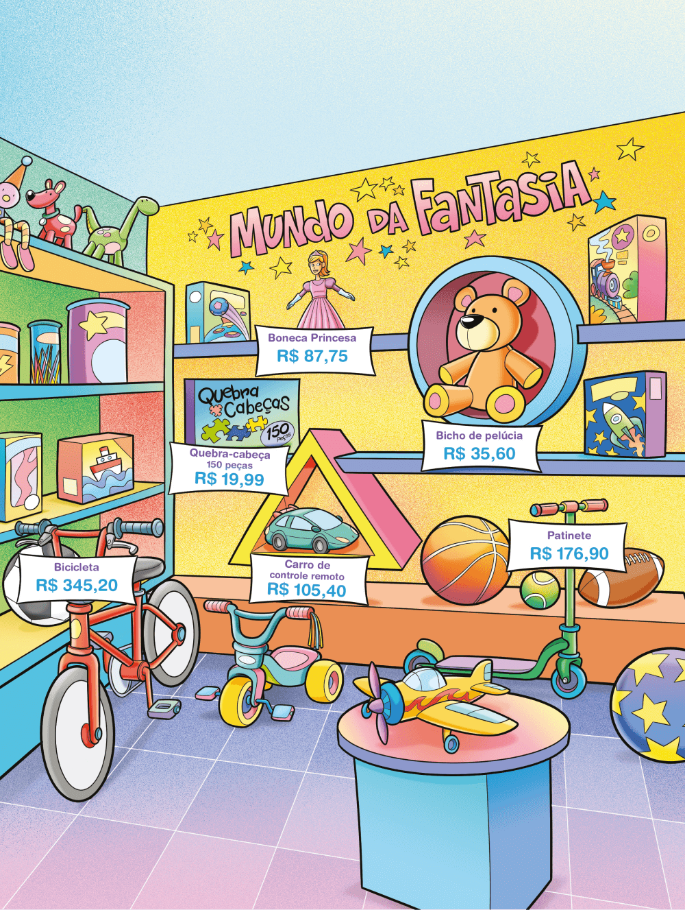

CAPÍTULO 3 - Operações com números decimais
Adição e subtração de números decimais
Reinaldo Rosa/Acervo da Editora
UNIDADE 6 - CAPÍTULO 3
220
A poesia dos brinquedos
Um dia escrevi um versinho que se tornou uma folha
inteirinha de poesia que encantou o mundo.
E até a bailarina da caixinha de música
aprendeu a sorrir e sorriu pela primeira vez.
E a boneca de pano ganhou vida e saiu contente a saltitar.
E o urso Tede começou a contar piadas.
E as bolinhas de gude não paravam de rir.
E o aviãozinho feliz voava sem o controle do menino o comandando.
Todos indo felizes para a poesia dos brinquedos onde podem ganhar vida.
Pelo menos uma vez na vida os brinquedos podem ser amigos e ter sentimentos.
Na eterna poesia dos brinquedos todos podem ser felizes.
ZANIN, Michelle. A poesia dos brinquedos.
In: ZANIN, Michelle. Vida. Araraquara: Zerocriativa, 2012.
1. No poema, a autora faz uma reflexão sobre o mundo encantado dos brinquedos. Converse com seu colega e verifique qual é o brinquedo que ele lembra e que marcou mais a sua infância quando era menor.

► Você encontra esse brinquedo nas ilustrações apresentadas? Qual é?
2. Você e seu colega receberam R$ 200,00 da escola para comprar alguns brinquedos. Observando as promoções da loja, quais brinquedos pode-riam comprar? Verifiquem várias possibilidades de compra.
3. Com o valor de R$ 200,00, é possível comprar a bicicleta? Por quê?
UNIDADE 6 - CAPÍTULO 3
221
Observe a seguir algumas situações que ocor-reram na loja de brinquedos.
Situação 1
Luciana resolveu comprar para sua filha uma boneca Princesa e um bicho de pelúcia. Quanto ela gastará no total?
Para saber o quanto Luciana irá gastar basta adicionarmos os valores.
87,75 + 35,60 = 8775/100 + 3560/100 = 12335/100 = 123,35

Reinaldo Rosa/Acervo da Editora
De modo prático temos:
Luciana gastará R$ 123,35.
Situação 2
Ricardo foi à loja de brinquedos para comprar um patinete para seu filho. Na hora de pagar, ele deu R$ 180,00. Quantos reais ele recebeu de troco?
Para saber o quanto ele recebeu de troco basta subtrairmos os valores.
180,00 - 176,90 = 18000/100 - 17690/100 = 300/100 = 3,10

Ricardo recebeu de troco R$ 3,10.
Para adicionarmos ou subtrairmos números decimais é necessário:
1. colocar um número embaixo do outro, com vírgula sob vírgula;
2. igualar a quantidade de casas decimais dos números, acrescentando zeros, quando necessário;
3. realizar a operação, mantendo a vírgula na mesma posição das parcelas.
222
UNIDADE 6 - CAPÍTULO 3
ENCONTRE SOLUÇÕES
1. Joana foi ao supermercado e comprou os seguintes produtos:
a) Quantos reais ela gastou ao todo?
b) Joana pagou a conta com uma nota de R$ 20,00. Quantos reais ela recebeu de troco?
2. Gabriela comprou um sapato e uma calça em uma loja do shopping. Na hora de pagar a compra ela deu R$ 150,00. Sabendo que ela recebeu de troco R$ 14,85, quantos reais ela gastou?
3. Em seu caderno, calcule:
a) 8,435 + 6,1
b) 0,03 + 5,96
c) 0,9 + 0,4 + 0,3
d) 8 - 4,1
e) 9,07 - 3,48
f) 8,3 + 7,02 - 0,23
4. Rodrigo corre três vezes por semana. Na última semana ele correu 4,2 km no primeiro dia, 3,8 km no segundo dia e 5,1 km no terceiro dia. Seu objetivo é correr 15 km por semana. Na semana que passou, quantos metros faltaram para que Rodrigo atingisse seu objetivo?
5. Em seu caderno, responda às questões a seguir.
a) Quanto falta a 0,56 para completar 2 unidades?
b) Qual é o número que subtraído de 8,13 resulta em 5,22?
c) Subtraindo 6,04 de um número, obtemos 2,27 como resultado. Qual é esse número?
6. Ana faz sacolinhas de pano para vender. Recebeu uma encomenda e precisou comprar alguns tecidos. Veja os tecidos e as quantidades que ela comprou.
► Quantos metros de tecido ela comprou no total?
7. Observe os algoritmos a seguir e descubra o valor de cada símbolo, de modo que as operações sejam verdadeiras. Os símbolos iguais representam algarismos iguais.
a)
►, 5 ►
+ 1, ● 6
9, 0 3
b)
♣, 0 ♣
- 4, ♦ 2
3, 4 6
UNIDADE 6 - CAPÍTULO 3
223

8. (OBMEP) Ao medir a cintura de Marta com uma fita métrica, Dona Célia observou que as marcas de 23 cm e 77 cm ficaram sobrepostas, como na figura. Qual é a medida da cintura de Marta?
Sergio Bonfim/Acervo da Editora
a) 23 cm
b) 50 cm
c) 54 cm
d) 77 cm
e) 100 cm
9. (OBMEP) A estrada que passa pelas cidades de Quixajuba e Paraqui tem 350 quilômetros. No quilômetro 70 dessa estrada há uma placa indicando Quixajuba a 92 km. No quilômetro 290 há uma placa indicando Paraqui a 87 km. Qual é a distância entre Quixajuba e Paraqui?
a) 5 km
b) 41 km
c) 128 km
d) 179 km
e) 215 km
Sergio Bonfim/Acervo da Editora
Multiplicação e divisão por 10, 100 e 1 000
Vamos verificar como realizar uma multiplicação de números decimais por 10, 100 e 1 000.
Reinaldo Rosa/Acervo da Editora
1. Com o auxílio de uma calculadora, realize as operações abaixo e anote os resultados em seu caderno.

a) 0,9 ∙ 10
b) 1,34 ∙ 10
c) 47,721 ∙ 10
d) 0,57 ∙ 100
e) 6,369 ∙ 100
f) 85,012 ∙ 100
g) 0,11 ∙ 1 000
h) 5,913 ∙ 1 000
i) 82,7892 ∙ 1 000
224
UNIDADE 6 - CAPÍTULO 3
2. Troque ideias com um colega e comparem a posição da vírgula nos números decimais dados com a posição da vírgula após realizar cada multiplicação. Expliquem o que vocês observaram.
3. Agora vamos realizar algumas divisões de números decimais por 10, 100 e 1 000. Com o auxílio de uma calculadora, realize as operações abaixo e anote os resultados em seu caderno.
a) 9 : 10
b) 12,5 : 10
c) 47,83 : 10
d) 57 : 100
e) 826,9 : 100
f) 91 012 : 100
g) 0,11 : 1 000
h) 591,3 : 1 000
i) 82 789,2 : 1 000
4. Troque ideias com um colega e comparem a posição da vírgula nos números decimais dados com a posição da vírgula após realizar cada divisão.
Expliquem o que vocês observaram.
Na multiplicação de um número decimal por 10, 100, 1 000, 10 000, ..., ou seja, uma potência de base 10, deslocamos a vírgula para a direita uma, duas, três, quatro casas,
..., respectivamente.
Na divisão de um número decimal por 10, 100, 1 000, 10 000, ..., ou seja, uma potência de base 10, deslocamos a vírgula para a esquerda uma, duas, três, quatro casas, ..., respectivamente.
Transformações das unidades de medida de comprimento
Situação 1
Mônica e Murilo mediram o comprimento do segmento AB com uma régua.
Reinaldo Rosa/Acervo da Editora
1. Troque ideias com um colega e expliquem qual dos dois acertou a resposta.
UNIDADE 6 - CAPÍTULO 3
225
Em determinadas situações precisamos realizar a transformação de unidades de medida de comprimentos. Veja a seguir, a relação entre as unidades.

Note que cada unidade é 10 vezes maior que a unidade imediatamente inferior e 1/10 da unidade imediatamente superior.
Vejamos mais algumas situações na qual foram feitas as transformações.
Situação 2
Luciana mediu a capa de seu caderno e encontrou 18 cm como medida da largura. Quantos milímetros mede a largura da capa?
Nesse caso, precisamos transformar cm e mm. Observe:
18 cm = (18 ∙ 10) mm = 180 mm
Logo, a largura da capa do caderno mede 180 mm.
Situação 3
Roberto percorre de bicicleta 3,5 km diariamente. Quantos metros ele percorre por dia?
percorre por dia? Nesse caso, precisamos transformar km em m. Observe:
3,5 km = (3,5 ∙ 1 000) m = 3 500 m
Portanto, Roberto percorre de bicicleta 3 500 m diariamente.

Reinaldo Rosa/Acervo da Editora
226
UNIDADE 6 - CAPÍTULO 3
Situação 4
A distância entre a casa de Bruno e Pedro é de 3 700 m. Qual a distância entre as duas casas em quilômetros?
Nesse caso, precisamos transformar m em km. Observe:
3 700 m = (3 700 : 1 000) km = 3,7 km
A distância entre a casa de Bruno e Pedro é de 3,7 km.
Situação 5
Carla é Design de Móveis e faz restaurações de móveis antigos. A mesa que ela irá restaurar mede 56 cm. Qual é a medida da largura da mesa em metros?
Nesse caso, temos que transformar cm em m. Observe:

56 cm = (56 : 100) m = 0,56 m
A largura da mesa de trabalho de Carla é igual a 0,56 m.
Situação 6
Para sua lapiseira, Daniel comprou grafite com 0,005 dm de diâmetro. A quantos milímetros corresponde o diâmetro do grafite que Daniel comprou?
0,005 dm = (0,005 ∙ 100) mm = 0,5 mm
O diâmetro da lapiseira é igual a 0,5 mm.
UNIDADE 6 - CAPÍTULO 3
227
ENCONTRE SOLUÇÕES

1. Calcule mentalmente as operações a seguir.
a) 56,98 ∙ 10
b) 0,029 ∙ 100
c) 0,0034 ∙ 1 000
d) 3,68 ∙ 10
e) 25,001 ∙ 1 000
f) 0,007 ∙ 100
g) 987,4 : 1 000
h) 11,78 : 10
i) 6 : 1 000
j) 123 : 100
k) 0,003 : 10
l) 9 : 10
2. Responda em seu caderno às questões a seguir.
a) Quantos milímetros há em 5 cm?
b) Quantos metros há em 6 km?
c) Quantos centímetros há em 12 m?
d) Quantos quilômetros há em 8 cm?
e) Quantos decímetros há em 10 mm?
f) Quantos centímetros há em 54 mm?
3. No ano de 2014, o campeonato mundial de Fórmula 1 foi disputado em 19 cidades diferentes em vários países. A seguir, temos representados 2 desses circuitos.
228
UNIDADE 6 - CAPÍTULO 3
a) Determine o trajeto percorrido, em quilômetros, por um piloto de Fórmula 1 que completa a prova em cada um desses circuitos?
b) Em qual circuito a quantidade de km percorridos em uma prova completa é maior?
4. Vanessa comprou várias cores de fitas de cetim. Veja a seguir as cores que ela comprou, a quantidade em metros de cada cor e o quanto ela já usou.
► Calcule, em seu caderno, quantos metros de fita restaram de cada cor.
5. Na tabela abaixo está relacionada a distância média dos planetas em relação ao Sol. Por serem distâncias grandes, essas medidas de comprimento estão representadas na forma de um produto de dois fatores. O primeiro fator é um número compreendido entre 1 e 9, e o segundo fator uma potência de base 10. Copie a tabela a seguir em seu caderno e represente essas medidas em km utilizando somente algarismos.
Distância média dos planetas em relação ao Sol

Multiplicação de números decimais
Multiplicação de um número decimal por um número natural
Beatriz foi ao supermercado e comprou 2 kg de carne para o almoço de domingo. Quanto ela gastou?
2 1 9,90 = 2 1 9,9 = 2199/10 =
398/10 = 39,8 = 39,80 ou
2 . 19,90 = 2 . 19,9 = 19,9 +19,9 = 39,8 = 39,80
De modo prático, temos:
Beatriz gastou R$ 39,80.
UNIDADE 6 - CAPÍTULO 3
229
Multiplicação de um número decimal por outro número decimal
Cecília foi a uma loja de armarinhos para comprar fitas para embrulhar alguns presentes. No total ela comprou 5,5 m de fitas. Quanto ela gastou?
Como ela comprou 5,5 m, temos:
5,5 . 0,84 = 55/10 . 84/100 = 4620/1000 = 4,620
De modo prático, temos:
0, 8 4 → 2 casas decimais
× 5, 5 → 1 casa decimal
420
+ 420
4,620 → 3 (2 + 1) casas decimais
Cecília gastou R$ 4,62.
Composição e decomposição de números decimais
Nos Jogos Olímpicos que ocorreu no Japão em 2021, a final da modalidade Salto com Vara masculino do Atletismo aconteceu no dia 3 de agosto no Estádio Olímpico. Veja no quadro abaixo como ficou a classificação final e as alturas saltadas pelos atletas.
©Aleksandra Szmigiel
Thiago Braz conquistou medalha de bronze na prova de Salto com Vara na Olimpíada de Tóquio. Japão, 2021.

Observe a altura alcançada pelos atletas indicada em metros. Cada uma dessas medidas está representada por um número decimal.
230
Esses números decimais podem ser escritos de outra forma, observe:
► 6,02 = 6 + 0,02 = 6 × 1 + 2 × 0,01
► 5,97 = 5 + 0,9 + 0,07 = 5 × 1 + 9 × 0,1 + 7 × 0,01
► 5,87 = 5 + 0,8 + 0,07 = 5 × 1 + 8 × 0,1 + 7 × 0,01
Nas formas escritas acima, estamos decompondo cada um dos números decimais.
Também é possível compor um número decimal a partir da sua forma decomposta, veja:
► 9 + 0,8 + 0,05 = 9,85
► 16 + 0,7 + 0,02 + 0,004 = 16,724
► 9 × 10 + 5 × 1 + 3 × 0,1 = 95,3
► 7 × 1 + 2 × 0,1 + 8 × 0,01 + 4 × 0,001 = 7,284
ENCONTRE SOLUÇÕES
1. Rogério foi a uma papelaria comprar alguns produtos para o seu escritório. Veja o que ele comprou e o quanto pagou em cada produto.
► Quantos reais ele gastou ao todo?
2. Calcule em seu caderno:
a) 0,7 ∙ 0,1
b) 1,3 ∙ 0,5
c) 123 ∙ 1,7
d) 0,07 ∙ 0,2
e) 0,6 ∙ 0,11
f) 1,64 ∙ 4
g) 1,5 ∙ 4
h) 0,8 ∙ 20
3. A medida do lado de um triângulo equilátero é igual a 6,2 cm. Ao triplicarmos essa medida, qual será a nova medida do lado?
4. Vamos relembrar algumas medidas estudadas anteriormente:
► 1 polegada corresponde a 2,54 cm;
► 1 pé corresponde a 0,3048 m;
► 1 jarda corresponde a 91,44 cm;
► 1 milha corresponde a 1,6 km.
a) Quantos centímetros de diâmetro tem um tubo de aço de 5 polegadas?
UNIDADE 6 - CAPÍTULO 3
231
b) A quantos metros de altura está uma aeronave que viaja a 32 000 pés?
c) Quantos centímetros mede a diagonal de um televisor de 32 polegadas?
d) Qual a distância, em quilômetros, entre Los Angeles e São Francisco sabendo que a distância entre as duas cidades é de 381 milhas?
e) Um campo de futebol americano tem 100 jardas de longitude por 53 jardas de largura. Quais as dimensões de um campo de futebol americano em metros?
5. As arestas do sólido geométrico a seguir foram construídas com pedaços de arame.
► Quantos centímetros de arame, ao total, foram gastos para construir o sólido geométrico?
6. Em seu caderno, calcule o valor das expressões a seguir.
a) 0,3 + 0,2 ∙ 100
b) 34,7 - 3,5 ∙ 8,2
c) 2,5 ∙ 10 ∙ 3,1
d) (8,3 + 4,5) - (0,9 ∙ 0,1)
7. Juliano foi ao supermercado e comprou 2,6 kg de tomate, 1,7 kg de cebola, 3,8 kg de batata e 0,5 kg de alho. Quanto ele gastou no total, sabendo que os preços dados correspondem ao valor do quilograma de cada produto?
8. Nos rótulos de produtos industrializados, a legislação brasileira obriga as indústrias a informar a tabela nutricional, com a quantidade de calorias e de nutrientes por porção do alimento. A seguir, temos o rótulo de um achocolatado em pó, que apresenta essa quantidade baseada sobre o total recomendado pela Anvisa, calculado sobre uma ingestão de 2 mil calorias diárias.
![Tabela com informações nutricional de um achocolatado em pó de uma porção de 20 g (gramas). Na tabela a quantidade por porção de 11 elementos nutricionais e a porcentagem dos valores diários de referência com base em uma dieta de 2 mil quilocalorias ou 8.400 kJ. De cima para baixo, os 11 elementos com as informações. Valor energético. 80 kcal = 336 kJ. 4%. Carboidratos. 19g. 6%. Proteínas. 0,5 g. 1%. Sódio. 28 mg. 1%. Vitamina A. 90 mcg. 15%. Vitamina B1. 0,18 mg. 15%. Vitamina B2. 0,19. 15%. Vitamina B3. 2,4 mg. 15%. Vitamina B6. 0,19 mg. 15%. Vitamina C. 6,7 mg. 15%. Vitamina D. 0,75 mcg. 15%.](../../resources/images/nutri.PNG)
"NÃO CONTÉM QUANTIDADES SIGNIFICATIVAS DE GORDURAS TOTAIS, GORDURAS SATURADAS, GORDURAS TRANS E FIBRA ALIMENTAR"
* % VALORES DIÁRIAS DE REFERÊNCIA COM BASE EM UMA DIETA DE 2.000 kcal OU 8.400 kJ. SEUS VALORES DIÁRIOS PODEM SER MAIORES OU MENORES DEPENDENDO DE SUAS NECESSIDADES ENERGÉTICAS.
► Em seu caderno, represente em uma tabela as informações nutricionais para porções de 40 g e 60 g.
232
UNIDADE 6 - CAPÍTULO 3
Divisão de números naturais tendo como resultado um número decimal
Observe as situações a seguir.
Situação 1
Lúcia tem 18 metros de fita de cetim vermelha e irá dividi-la igualmente entre suas quatro primas. Quantos metros de fita cada uma de suas primas irá receber?
Para saber quantos metros cada prima irá receber precisamos realizar uma divisão. Observe:
2 unidades correspondem a 20 décimos.

Como a divisão não é exata precisamos transformar 2 unidades em 20 décimos para continuarmos a divisão, dessa forma colocamos uma vírgula no quociente para separar a parte decimal.
Cada prima irá receber 4,5 metros de fita de cetim vermelha.
Situação 2
Um barbante com 3 m de comprimento precisa ser dividido em 6 partes com a mesma medida. Qual será a medida, em metros, de cada um dos pedaços?
Para sabermos a medida de cada pedaço devemos dividir 3 por 6. Observe:
Para podermos realizar a divisão precisamos transformar 3 unidades em 30 décimos.
Ao dividirmos 30 décimos por 6, o quociente será igual a 5 décimos.
Cada pedaço de barbante medirá 0,5 metros.
UNIDADE 6 - CAPÍTULO 3
233
ENCONTRE SOLUÇÕES
1. Um carpinteiro precisa cortar um pedaço de madeira de 6 metros em 4 partes iguais. Qual será, em metros, a medida de cada pedaço?
2. Calcule em seu caderno:
a) 10 : 4
b) 8 : 5
c) 12 : 24
d) 2 : 8
e) 5 : 4
f) 13 : 2
g) 171 : 50
h) 27 : 5
3. Toda fração pode ser representada por um número decimal. Nesse momento veremos a representação decimal finita ou infinita e periódica. Observe:
19/2 = 19 : 2 = 9,5 ⟶ Número decimal finito
11/3 = 11: 3 = 3,6666... ⟶ Número decimal infinito e periódico
Há divisões não exatas em que conseguimos obter apenas valores aproximados para o quociente, porque nunca obtemos resto zero. Nesse caso, o quociente é denominado de dízima periódica e o algarismo 6 que se repete é chamado de período da dízima periódica. Veja sua representação:
11/3 = 3,6
► Represente as frações a seguir em forma de números decimais identificando se sua representação é um número decimal finito ou infinito e periódico.
a) 14/5
b) 8/25
c) 3/5
d) 283/99
e) 37/5
f) 733/90
4. A velocidade máxima permitida nas rodovias brasileiras é de 110 km/h, que sempre está indicada por meio de sinalizações, obedecendo as características técnicas da via e as condições de trânsito, sendo que devem ser respeitadas para evitar acidentes. Podemos calcular a velocidade média de um veículo fazendo a divisão entre duas medidas, a distância percorrida (em km) e o tempo (em h) que esse veículo levou para percorrê- la. Observe, a seguir, a distância percorrida por 3 amigos e o tempo que cada um levou para percorrê-la.

► Qual foi a velocidade média, aproximadamente, dos veículos de Paulo, Marcos e Juliano nas situações apresentadas?
234
UNIDADE 6 - CAPÍTULO 3
Divisões em que pelo menos um número é decimal
Observe a situação a seguir.
Mônica realizou uma divisão simples e, em seguida, multiplicou o dividendo e o divisor por 2 e calculou o quociente. Observe:
Na sequência, ela multiplicou o dividendo e o divisor da primeira divisão por 3 e calculou o quociente.

Reinaldo Rosa/Acervo da Editora
1. Troque ideias com um colega e observem o valor encontrado como quociente nas três divisões realizadas por Mônica. O que vocês observaram?
Expliquem.
A situação apresentada exemplifica a seguinte propriedade da divisão:
Quando multiplicamos o dividendo e o divisor por um mesmo número natural, diferente de zero, o quociente não se altera.
Utilizaremos a propriedade que acabamos de estudar para realizar divisões em que pelo menos um dos números é um número decimal.
UNIDADE 6 - CAPÍTULO 3
235
Situação 1
Reinaldo Rosa/Acervo da Editora
Uma prefeitura está fazendo a instalação de postes de energia elétri-ca em uma avenida de um novo bairro. Os postes deverão ser colocados a uma distância média de 0,04 km um do outro. Sabendo que essa avenida tem 2 km, quantos postes serão necessários para iluminar toda a avenida?
Para sabermos quantos postes serão necessários vamos dividir 2 por 0,04.
Dessa forma, vamos utilizar a propriedade que acabamos de estudar para transformar o divisor em um número natural, multiplicando divisor e dividendo por 100, já que o quociente não se altera. Observe:
2 : 0,04 = ( 2 ∙ 100) : (0,04 ∙ 100) = 200 : 4
Agora, realizamos a divisão de dois números naturais:
Assim, serão necessários 50 postes.
Situação 2
Marcela comprou 4 caixas de bombons para dar aos seus sobrinhos.
Sabendo que ela gastou R$ 31,36 ao todo, quanto custou cada caixa?
Para sabermos quanto custou cada caixa basta calcularmos 31,36 : 4.
Dessa forma, vamos utilizar a propriedade que acabamos de estudar
para transformar o dividendo em número natural, multiplicando
divisor e dividendo por 100, já que o quociente não se altera.
Observe:
31,36 : 4 = (31,36 ∙ 100) : (4 ∙ 100) = 3 136 : 400
Agora, realizamos a divisão de dois números naturais.
Transformamos 336 unidades em 3 360 décimos
Transformamos 160 décimos em 1 600 centésimos

Cada caixa custou R$ 7,84.
236
UNIDADE 6 - CAPÍTULO 3
Situação 3
Carlos possui um pedaço de madeira que mede 7,6 m e irá dividi-lo em pedaços menores que medem 0,4 m. Quantos pedaços de madeiras ele terá?
Para saber a quantidade de pedaços devemos fazer 7,6 : 0,4.
Inicialmente, multiplicaremos o dividendo e o divisor por 10 para
obtermos a divisão de dois números naturais. Veja:
7,6 : 0,4 = (7,6 ∙ 10) : (0,4 ∙ 10) = 76 : 4

Reinaldo Rosa/Acervo da Editora
Agora, realizamos a divisão de dois números naturais.
Carlos ficará com 19 pedaços de madeira.
ENCONTRE SOLUÇÕES
1. Quatro amigos foram a um restaurante e a conta deu R$ 128,48. Eles resolveram dividir o valor total igualmente. Quanto cada um pagou?
2. Calcule em seu caderno:
a) 48,6 : 3
b) 10,35 : 2,3
c) 0,492 : 1,23
d) 16,4 : 2
e) 135 : 0,25
f) 7,7 : 2,2
g) 17,92 : 2,24
h) 5,04 : 0,8
3. Marcela abasteceu seu carro e pagou com duas notas de R$ 50,00. Sabendo que ela recebeu de troco R$ 1,65 e colocou 35 litros de gasolina, escreva uma expressão que permita calcular o valor do litro do combustível. Em seguida, calcule o valor do litro de gasolina pago por Marcela.
4. José aproveitou as ofertas de fim de ano e comprou um micro-ondas por R$ 385,30, uma lavadora de roupa por R$ 656,75 e um fogão 4 bocas por R$ 494,25. Ele irá dividir o valor total da compra em 6 prestações de mesmo valor. Escreva uma expressão que permita calcular o valor de cada prestação e em seguida calcule o valor da prestação.
5. Calcule mentalmente as divisões a seguir e anote em seu caderno o resultado.
a) 2,6 : 0,2
b) 260 : 0,02
c) 2,6 : 0,002
d) 24 : 0,4
e) 2,4 : 0,4
f) 24 : 0,04
UNIDADE 6 - CAPÍTULO 3
237
6. Vamos relembrar algumas medidas estudadas anteriormente.
► 1 polegada corresponde a 2,54 cm;
► 1 milha corresponde a 1,6 km.
Agora, em seu caderno, responda:
a) A distância entre as cidades de Houston e Dallas no Texas é de aproximadamente 385,6 km. A quantas milhas corresponde essa distância?
b) A diagonal de um monitor de computador tem 54,61 cm. De quantas polegadas é esse monitor?
7. Calcule o valor das expressões a seguir.
a) 2,3 + 0,5 ∙ 4 : 0,2
b) 8,9 - 1,6 : 0,8 + 4,1
c) (3,5 + 8,5) : (9,2 - 8,8)
d) 9,6 : 3 - 2,75
e) (0,2 ∙ 0,3) : (3,4 - 3)
238
UNIDADE 6 - CAPÍTULO 3


ENCONTRE SOLUÇÕES
1. Calcule no caderno:
3. Calcule o valor das expressões em seu a) (1,2)2
e) (8,4)0
caderno.
b) (5,3)1
f) (1,4)2
a) 30 - (1,3)2 + 5,2
c) (0,2)4
g) (9,3)1
b) 14,4 : 1,2 + (1,1)2 - 0,8
d) (0,1)5
h) (7,5)0
c) (2,5 + 1,8)0 + 0,8 : 0,02 ∙ 0,3
d) (1,9 - 0,7)1 : (3,8 - 3) + (1,5)2
2. Sabendo que m = 0,2 e n = 0,3, em seu e) (1 - 0,7)2 + (9 - 3)2
caderno, determine o valor de:
f) (3,6 : 1,8)2 - 3,5 + (6,3 - 5,4)
a) m2 + n2
c) n - m2
b) m - n2
Cálculo de porcentagem
Leia a reportagem a seguir.
Dia Mundial da Água: 22 de março
Criada pela Organização das Nações Unidas (ONU) durante a Conferência Rio-92, no Rio de Janeiro, em 1992, a data 22 de março é um lembrete anual de que a água é primordial para a sobrevivência dos seres vivos (homens, animais e plantas), mas principalmente da importância de cuidarmos desse recurso tão precioso e escasso.
Isso porque apesar de mais de 70% da superfície da Terra ser coberta por água, menos de 1% é própria para consumo. Do total de água disponível no planeta, 97% estão nos mares e oceanos (água salgada) e apenas 3% são água doce. Dessa pequena porcentagem, pouco mais de 2% estão nas geleiras (em estado sólido) e, portanto, menos de 1% está disponível para consumo.
E você sabe onde está localizado esse 1% de água doce disponível para consumo? Está nos rios, lagos e águas subterrâneas. E, como sabemos, grande parte dessas fontes está sendo poluída, contaminada e degradada por más práticas humanas.
©WWF-Brasil
[...]
DIA mundial da água: 22 de março. WWF. Disponível em: https://www.wwf.org.br/natureza_brasileira/areas_prioritarias/pantanal/
dia_da_agua/#:~:text=Isso%20porque%20apesar%20de%20mais,apenas%203%25%20s%C3%A3o%20%C3%A1gua%20doce. Acesso em: 16 mar. 2022.
UNIDADE 6 - CAPÍTULO 3
UNIDADE 6 - CAPÍTULO 3
239


1. Qual o assunto abordado na reportagem?
2. Troque ideias com um colega e verifiquem o que é possível fazer para preservamos a água potável no planeta. Escrevam no caderno algumas ações simples que podemos fazer no dia a dia.
3. Escrevam no caderno a fração decimal que representa: a) a quantidade de água salgada do planeta; b) a quantidade de água doce;
c) da porcentagem que representa a água doce que há no planeta, escrevam o número decimal que corresponde:
► às geleiras e congelados;
► aos subterrâneos;
► aos lagos e rios.
Como estudamos anteriormente, toda fração decimal cujo denominador é igual a 100 ou qualquer representação equivalente a ela pode ser representada na forma de porcentagem.
Dessa maneira, podemos também representar os números decimais na forma de porcentagem transformando o número decimal dado em uma fração de denominador 100. Veja alguns exemplos: a) 0,78 78
=
= 78%
c)
0,025
25
2,5
=
=
= 2,5%
100
1 000 100
b) 0,09
9
=
= 9% d)
13 13 130
, =
=
= 130%
100
10 100
Observe as situações a seguir.
Situação 1
Na escola de João, 80% dos meninos tem o futebol como esporte preferi-do. Sabendo que na escola há 640 meninos, quantos deles preferem futebol?
Vamos verificar quanto representa 80% de 640.
80% de 640 corresponde à 80 de 640, ou seja, 100
80 640 4 640128
⋅
=
⋅
= 4 ⋅128
⋅ = 512
100
1 5
Reinaldo Rosa/Acervo da Editora
ou 80% de 640 corresponde à 80 de 640, ou seja, 100
0,8 ∙ 640 = 512
Para calcular 80% de 640 podemos utilizar frações decimais ou números decimais.
Portanto, 512 meninos preferem futebol.
240
UNIDADE 6 - CAPÍTULO 3


Situação 2
Observe abaixo a região colorida em vermelho na malha quadriculada.
Qual é a porcentagem que representa a parte da figura que está em vermelho?
Note que a fração que representa a parte
colorida da figura é 21 .
35
21 = 21 : 35 = 0,6 = 0,60 = 60%
35
Portanto, 60% da figura está colorida em vermelho.
ENCONTRE SOLUÇÕES
1. Em seu caderno, represente, na forma
3. Quanto representa:
de número decimal, cada uma das por-
a) 15% de R$ 150,00?
centagens.
b) 50% de R$ 75,00?
a) 75%
e) 143%
c) 30% de R$ 282,00?
b) 8%
f) 14,6%
d) 92% de R$ 300,00?
c) 23%
g) 0,11%
d) 5,9%
h) 257%
4. O preço à vista de uma televisão é de R$ 950,00. Se a compra for parcelada
2. Observe as malhas quadriculadas e,
em 10 vezes, serão acrescidos 12% ao
em seu caderno, escreva a porcenta-
valor total. Qual será o valor de cada
gem que representa a parte colorida
parcela?
em cada uma delas.
5. Para ser eleito, um candidato a prefeito a)
deve obter, pelo menos, 50% dos vo-
tos válidos, desconsiderando os votos
brancos e nulos, mais um. Se, numa
eleição, houve 83 452 votos válidos,
b)
quantos votos um candidato deve ob-
ter, no mínimo, para que seja eleito?
6. Uma loja está fornecendo 10% de des-
c)
conto em seus produtos. Quem fizer a
compra no dia do aniversário ganhará
mais 10% de desconto sobre o preço
final. Quanto pagará um aniversariante
que gastar R$ 100,00 nessa loja?
UNIDADE 6 - CAPÍTULO 3
UNIDADE 6 - CAPÍTULO 3
241


7. A Copa do Mundo de 2014 foi realizada no Brasil. A seguir, temos um levantamento da quantidade de gols marcados e sofridos na primeira rodada do mundial, das seleções que já foram campeãs do mundo. Em seu caderno, escreva a porcentagem que representa a quantidade de gols marcados de cada seleção em relação ao total de gols de cada partida.
Brasil
Itália
Alemanha
Argentina
Gols
marcados
3
2
4
2
Gols
1
1
0
1
sofridos
Uruguai
Inglaterra
França
Espanha
1
1
3
1
3
2
0
5
8. Marcos comprou um refrigerador por R$ 1.649,00. Sua amiga Júlia fez uma pesquisa de preço e conseguiu comprar o mesmo refrigerador pagando 90% do valor que Marcos pagou. Quanto Júlia pagou pelo refrigerador?
9. (OBMEP) Em 2009 uma escola tinha
320 alunos esportistas, dos quais
45% jogavam vôlei. Em 2010 essa
porcentagem diminuiu para 25%,
mas o número de jogadores de vôlei
não se alterou. Qual era o número de
alunos esportistas em 2010?
a) 480
b) 524
c) 560
d) 576
e) 580
Sergio Bonfim/Acervo da Editora
242
UNIDADE 6 - CAPÍTULO 3


PROBABILIDADE E ESTATÍSTICA
Construção de gráficos usando software de planilha eletrônica No ano de 2019 foi realizada uma pesquisa intitulada Sustentabilidade: o impacto no hábito dos brasileiros e nas marcas, identificando que os brasileiros estão mudando seus hábitos em função da preocupação com o meio ambiente.
As informações a respeito da pesquisa podem ser identificadas nos gráficos a seguir.
Quais hábitos você mudou no seu cotidiano por conta do meio ambiente?
Não mudei meus hábitos de consumo pela 6,38%
sustentabilidade
Parei de comer carne 7,16%
Diminui o consumo de produtos com base 33,08%
animal (carne e laticínios)
Me tornei vegano(a) 4,84%
Deixei de consumir uma marca/produto por 29,11%
não ser sustentável
Deixei de consumir uma marca/produto por 37,52%
fazer teste em animais
Tento usar produtos com embalagens reci- 72,34%
cláveis/reutilizáveis
Tento usar mais transporte público, bicicleta, 49,03%
etc.
Evito embalagens plásticas, como canudos, 70,12%
copos, etc.
Fonte: https://www.meioemensagem.com.br/home/marketing/2019/11/21/brasileiros-mudam-de-habitos-pelo-meio-ambiente.html.
Acesso em: 16 mar. 2022.
Quais são as razões mais importantes que fizeram com que você mudasse seus hábitos pelo meio ambiente?
Preocupação com a preservação do planeta 75,44%
Preocupação com as próximas gerações 65,38%
Preocupação com a falta de água e alimen- 62,19%
tos
Preocupação com a saúde e bem-estar 70,31%
Outros: 3,29%
Fonte: https://www.meioemensagem.com.br/home/marketing/2019/11/21/brasileiros-mudam-de-habitos-pelo-meio-ambiente.html.
Acesso em: 16 mar. 2022.
UNIDADE 6 - CAPÍTULO 3
UNIDADE 6 - CAPÍTULO 3
243


1. Troque ideias com um colega e, em seus cadernos, escrevam um texto explicando as informações que constam nos gráficos.
2. Agora, vamos construir o primeiro gráfico usando um software de planilha eletrônica, para representar as porcentagens indicadas na pesquisa e ela-borar um gráfico de barras.
1.º Acesse o programa LibreOffice Calc.
2.º Digite na coluna A os nomes dos hábitos que apareceram na pesquisa e na coluna B a porcentagem de brasileiros que indicaram cada um dos hábitos.
3.º Clique com o mouse na célula A1 e arraste até a célula B9 para sele-cionar todas as células que contém as informações que você digitou.
4.º Clique no botão
para abrir a janela “Assistente de gráfico”. Esco-lha o gráfico com barras horizontais e o gráfico se formará.
5.º Clique sobre o gráfico e depois no botão para inserir o título. Digite o título do gráfico e os dados.
244
UNIDADE 6 - CAPÍTULO 3


6.º Ao clicar em “ok”, o gráfico estará pronto.
► Agora que você já sabe como construir um gráfico usando um software de planilha eletrônica, construa o segundo gráfico apresentado na atividade.
3. Com um colega, faça uma pesquisa em sua turma para conhecer os hábitos de seus colegas em relação à preocupação com a preservação do meio ambiente. Anote as informações em uma tabela e, a seguir, usando um software de planilha eletrônica, construa o gráfico com as informações coletadas.
RELEMBRE
1. (Saresp) Vovô Pedro mediu a altu-
3. Calcule, mentalmente,
ra da parede da sala. Indique a al-
e anote os resultados
ternativa que mostra um resultado
em seu caderno.
possível dessa medição.
a) 0,9 ∙ 10
a) 3 metros
b) 10,4 ∙ 100
b) 50 centímetros
c) 0,0007 ∙ 1 000
c) 86 metros
d) 78,5 ∙ 100
d) 99 centímetros
e) 9,31 ∙ 10
2. No caderno, identifique quais das f) 0,307 ∙ 1 000
igualdades a seguir são verdadei-
g) 126 : 10
j) 1,7 : 100
ras.
h) 35 : 100
k) 89,2 : 10
i) 0,2 : 1 000
l) 5 : 1 000
671
a) 0,05= 5
f)
= 67 1
, %
1 000
10
4. Em seu caderno, responda às ques-
tões a seguir.
b) 8,75= 875 g)
0,03 = 3
100
a) 13 metros equivalem a quantos
10
centímetros?
c) 304 =30,4
45
b) Quantos metros há em 1 km?
h) = 4,5
100
100
c) 45 centímetros equivalem a
quantos milímetros?
d) 84 = 0,084
1 000
i)
0,6% = 0,006
d) Quantos milímetros há em 1 me-
tro?
e) 45,2% = 0,452
e) 678 centímetros equivalem a
quantos metros?
UNIDADE 6 - CAPÍTULO 3
UNIDADE 6 - CAPÍTULO 3
245


5. Calcule as expressões a seguir no
7. No início de 2015, 3 dos
caderno.
reservatórios de água
a) 1 - (0,2 + 0,03 + 0,004)
que abastecem a cidade
de São Paulo atingiram
b) 10 - 2,1 ∙ 0,2 + 4
níveis baixíssimos, provo-
c) (1,4)2 + 0,3 ∙ 1,5 - 0,4 + (5,4)0
cando uma crise histórica de abas-
d) (2 - 1,2)2 + (1,4 + 3,5)1
tecimento de água na cidade. Ob-
serve, a seguir, o nível de água dos
6. Lúcia aproveitou algumas ofertas da
3 reservatórios no dia 31 de janeiro
loja de eletrodomésticos para com-
de 2015.
prar os produtos abaixo.
Média dos últimos dez
Nível na manhã
Capacidade
anos em 1º de janeiro*
do dia 31/01/15*
máxima**
1 264,8
61,9
R$ 91,72 à vista
573,8
ou 12x de R$ 8,99
52,5
62,9 171,2
5,1
10,8
48,1
Cantareira
Alto Tiete
Guarapiranga
*em ponto percentual
**em bilhões de litros
Fonte: Folha de S. Paulo, 2015.
Nesse dia, o nível do Cantareira es-
tava com 5,1% de sua capacidade
total que é de 1 264,8 bilhões de
litros de água. Utilizando uma cal-
culadora, vamos calcular quantos
litros de água estavam disponíveis
no reservatório de água nessa data.
Reinaldo Rosa/Acervo da Editora
R$ 829,08 à vista
5,1% de 1 264,8 bilhões correspon-
dem a 0,051 de 1 264,8 bilhões, ou
ou 12x de R$ 81,28
seja, 0,051 ∙ 1 264,8 bilhões.
Logo, nesse dia estavam dispo-
níveis 64,5048 bilhões de litros de
a) Se Lúcia comprar os produtos à
água, ou seja, 64 504 800 000 litros
vista, quanto ela gastará no total?
de água.
b) Qual o valor de cada produto na
► Agora, com o auxílio da calcula-
compra a prazo?
dora, calcule quantos litros esta-
c) Caso resolva comprar os produ-
vam disponíveis nos reservató-
tos à vista, quanto Lúcia econo-
rios do Alto Tietê e Guarapiran-
mizará?
ga nesse dia.
246
UNIDADE 6 - CAPÍTULO 3

8. No infográfico a seguir é possível conferir os números sobre o acesso à internet no Brasil e no mundo.
A pesquisa aponta que
no Brasil, 60% dos
17% dos adultos não têm
adultos no país têm um
acesso a qualquer tipo de
smartphone, enquanto
tecnologia móvel no Brasil.
33% têm um aparelho
móvel não inteligente.
O Brasil está entre os três
países do mundo no qual a
90%
população passa, em
67%
60%
média, mais de 9 horas
49%
navegando na internet.
O Brasil aparece como um dos
dois únicos países onde o tempo
diário gasto nas redes sociais
Sergio Bonfim/Acervo da Editora
Uso da internet
supera 3 horas e meia por dia.
Uso das redes sociais
Países desenvolvidos
Países em desenvolvimento
Fonte: Pew Research Center, 2020.
a) Em seu caderno, escreva a forma fracionária das porcentagens que aparecem nesse infográfico.
b) Se a população adulta brasileira em 2020 era de aproximadamente 172 mi-lhões de habitantes, qual era o número de pessoas que tinha pelo menos um smartphone?
c) Qual é a diferença no uso das redes sociais entre países desenvolvidos e em desenvolvimento?
9. Em seu caderno, escreva uma possibilidade de decomposição para os números decimais a seguir.
a) 7,08
b) 13,65
c) 4,352
10. Em seu caderno, escreva os números decimais formados por: a) 8 × 100 + 7 × 1 + 6 × 0,01
b) 7 × 10 + 2 × 1 + 9 × 0,01 + 4 × 0,001
c) 6 × 0,1 + 5 × 0,01 + 1 × 0,0001
UNIDADE 6 - CAPÍTULO 3
UNIDADE 6 - CAPÍTULO 3
247


UNID
7ADE Grandezas e medidas
Reinaldo Rosa/Acervo da Editora
248


Vende-se apartamento
71 m2 de área privativa
Este apartamento apresenta: 3 dormitórios, sendo 1 suíte, uma sala com dois ambientes, cozinha, lavanderia e 1 banheiro. No edifício há área para o lazer, para a prática esportiva, entretenimento e contemplação. O espaço contemplação é um verdadeiro tributo à natureza sendo 10 000 m2 de bosques. Cada apartamento tem direito a uma vaga de garagem.
CONVERSE
1. Como vimos no texto, a superfície do apartamento possui uma medida. Como chamamos a medida de uma superfície?
2. O que os valores 71 m² e 10 000 m² indicam?
3. Como poderíamos saber o comprimento total do contorno do apartamento? Como chamamos essa medida?
249


CAPÍTULO
1
Perímetro
Conceito de perímetro
Juliana adora costurar e está fazendo uma colcha de patchwork. Para fazer o acabamento da colcha, ela deverá costurar uma fita de cetim em toda a sua volta.
Reinaldo Rosa/Acervo da Editora
1. Quantos metros de fita lilás Juliana precisará para fazer o acabamento da colcha? Troque ideias com seu colega e expliquem como é possível fazer esse cálculo.
a) Sabendo que a colcha sem o acabamento tem 180 cm por 230 cm, quantos metros de fita serão necessários para fazer o acabamento?
250
UNIDADE 7 - CAPÍTULO 1


Sabendo que a colcha tem 180 cm por 230 cm, quantos metros de fita serão necessários para fazer o acabamento da colcha? Para responder a essa questão, é necessário calcular o perímetro.
Perímetro de um polígono é igual à soma das medidas dos comprimentos dos seus lados.
Portanto: 180 + 180 + 230 + 230 = 820 cm. Transformando esse valor em metros, temos 8,2 m.
Agora, observe como podemos calcular o perímetro (P) de alguns polígonos.
a)
b)
3 cm
3 cm
10 cm
6 cm
3 cm
3 cm
8 cm
3 cm
P = 6 + 10 + 8 = 24 cm
P = 5 ∙ 3 = 15 cm
ENCONTRE SOLUÇÕES
1. Em seu caderno, determine o períme-
d)
2 cm
tro dos polígonos a seguir.
5 cm
a)
4 cm
2 cm
8 cm
2 cm
2 cm
6 cm
2. O perímetro de um quadrado é igual a
30 cm. Qual é a medida do lado desse
b)
quadrado?
3. A medida do lado de um hexágono re-
gular é igual a 6 cm. Qual é o períme-
3 cm
tro desse hexágono, sabendo que ele
apresenta todos os lados com a mes-
ma medida?
5 cm
c)
4. O perímetro de um retângulo é igual a 4,5 cm
4,5 cm
54 cm. Sabendo-se que um dos lados
mede 12 cm, determine a medida do
outro lado.
7 cm
UNIDADE 7 - CAPÍTULO 1
UNIDADE 7 - CAPÍTULO 1
251


5. Na malha quadriculada a seguir, temos 8. Leia o texto a seguir.
alguns polígonos representados. Em
Começa nesta terça-feira costura dos
seu caderno, determine o perímetro de
rolos de grama sintética no Maracanã
cada um deles, sabendo que a medida
do lado de cada quadradinho da malha
[…]
é igual a 0,5 cm.
O gramado híbrido entre grama na-
tural e sintética é um modelo que vem
sendo muito bem visto no futebol. O maior exemplo disso é Itaquera. A Arena do Co-A
B
rinthians usa este formato e é sempre
C
elogiada pela ótima qualidade do campo,
considerado pelos jogadores e treinado-
res como o melhor do Brasil.
D
E
[…]
COMEÇA nesta terça-feira costura dos rolos de grama sintética no Maracanã.
Diário do Fla, fevereiro de 2022. Disponível em: https://diariodofla.com.br/
comeca-nesta-terca-feira-costura-dos-rolos-de-grama-sintetica-no-maracana/.
a) Qual dos polígonos apresenta o
Acesso em: 16 mar. 2022.
maior perímetro?
► Sabendo-se que o campo é retangu-
b) Quais são os polígonos que apre-
lar e suas dimensões são 105 m por
sentam o mesmo perímetro?
68 m, determine o seu perímetro.
6. A seguir, temos um triângulo equilátero 9. Um terreno quadrado tem um muro me-cujo perímetro é igual a 12 cm. Deter-
dindo 116,6 m de comprimento e um
mine o perímetro do octógono regular.
portão eletrônico medindo 3,4 metros.
Reinaldo Rosa/Acervo da Editora
7. Determine o perímetro do polígono
abaixo.
a) Qual é o perímetro desse terreno?
b) Quanto mede o lado desse terreno?
13,5 cm
10. Um retângulo e um quadrado têm pe-
rímetros iguais. Sabendo que os lados
do retângulo medem 7 cm e 4 cm, de-
termine a medida do lado do quadrado.
21,9 cm
252
UNIDADE 7 - CAPÍTULO 1


11. Márcio adora praticar esportes. Ele corre dois dias por semana em uma praça perto de sua casa. Ele sempre dá 4 voltas completas na pista de corrida. Quantos quilômetros, aproximadamente, ele costuma correr em um dia?
Reinaldo Rosa/Acervo da Editora
12. (OBMEP) Daniela quer cercar o terreno 60
representado pela figura. Nessa figura, dois lados consecutivos são sempre per-pendiculares e as medidas de alguns la-
60
dos estão indicadas em metros. Quantos 40
metros de cerca Daniela terá que com-
prar?
a) 140
d) 1 800
80
b) 280
e) 4 800
c) 320
13. (OBMEP) Juntando, sem sobreposição,
quatro ladrilhos retangulares de 10 cm por 45 cm e um ladrilho quadrado de lado 20
cm, Rodrigo montou a figura ao lado. Com
uma caneta vermelha ele traçou o contor-
no da figura. Qual é o comprimento desse
contorno?
a) 180 cm
d) 280 cm
b) 200 cm
e) 300 cm
c) 220 cm
UNIDADE 7 - CAPÍTULO 1
UNIDADE 7 - CAPÍTULO 1
253


CAPÍTULO
2
Áreas
Conceito de medidas de superfície
Na malha triangular abaixo, representamos 3 polígonos.
Esses polígonos são figuras geométricas planas. Podemos calcular as medidas de suas superfícies comparando grandezas da mesma espécie. Usando um Δ, o qual chamaremos de u, como unidade de medida, vamos calcular a medida da superfície de cada polígono.
1. Troque ideias com um colega e utilizando o Δ como unidade de medida, no caderno, indiquem qual a medida de superfície de cada polígono.
Ao realizar essas medições, estamos calculando a área de cada polígono usando o Δ como unidade de medida.
A medida de uma superfície é chamada de área.
Metro quadrado
Em jornais e revistas é comum encontrarmos anúncios de venda de imó-veis. Observe a seguir dois desses anúncios.
254
UNIDADE 7 - CAPÍTULO 2